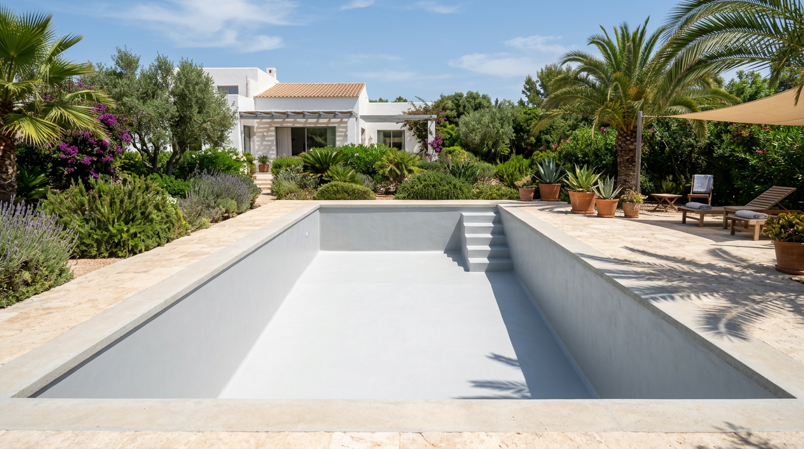

Estética y durabilidad para tu piscina. Te ayudamos a elegir el revestimiento que mejor se ajuste a tus necesidades.
Si vas a construir una nueva piscina o llega el buen tiempo y estás pensando en renovar o darle un aspecto diferente al que llevas años viendo, el tipo de revestimiento para tu piscina es fundamental por dos motivos.
El revestimiento es el «toque final», por lo que esta variable será sin duda la que marque la diferencia.
Este elemento es igual o más importante. Tienes que barajar lo que más se ajusta a tus deseos y necesidades según tus preferencias, sin dejar de lado la vista a largo plazo, pensando siempre en el futuro de tu piscina.
Por experiencia sabemos que el tipo de revestimiento no solo influye en la estética o durabilidad. Aspectos como la hermeticidad, la capacidad para detectar fugas en la misma y repararlas, o la limpieza en la piscina, influyen en mayor medida en el revestimiento escogido. En Cuesa Sport te ayudaremos a decidirte y establecer el mejor revestimiento para tu piscina. Veamos los más comunes y con los que a menudo trabajamos.
Simula cómo se vería la misma piscina con cada tipo de revestimiento. Elige material y variante.

Es un material destinado a la construcción, conocido como azulejo vítreo o azulejo de gres cuando su tamaño es pequeño. Caracterizado además por estar compuesto de fibra de vidrio en su fabricación. Son muchas las ventajas que tiene este azulejo una vez queda revestido el vaso (interior de la piscina):
Dibujo en gresite: Es una modalidad a petición única y exclusiva del cliente. Se trata de pintar un dibujo en el fondo de la piscina; original es, desde luego. Hemos pintado desde animales (peces, delfines), hasta escudos de equipos de fútbol. Las opciones son totalmente infinitas. Siempre recomendamos seguir la estética del entorno y revestimiento, claro está.
Es también un azulejo vítreo, pero esta vez hablamos de mayores dimensiones. Se caracteriza por su gran impermeabilidad, pero también por su escasa resistencia a bruscos cambios de temperatura y, sobre todo, a los años de vida. Este tipo de azulejo suele ser destinado a piscinas de un tamaño superior a los 15 o 20 metros de largo por 5 o 10 de ancho, ya que ofrece una rapidez de colocación mayor a la de cualquier otro. No obstante, la estética y adaptación al entorno son claramente destacables.
Presentamos uno de los materiales por excelencia tanto en revestimiento de piscinas (interior del vaso), como en coronación de esta (alrededor de la piscina), puesto que el mismo material puede ser empleado en ambos casos. Es un material de cerámica compuesto por una pasta muy dura, y se caracteriza principalmente por dos motivos:
Cabe destacar que para este tipo de material, nuestra empresa de referencia es ROSAGRES, que nos proporciona multitud de diseños que ofrecemos a nuestros clientes a su gusto.
Cuéntanos tu proyecto y te recomendamos la mejor opción para tu piscina.
Contactar